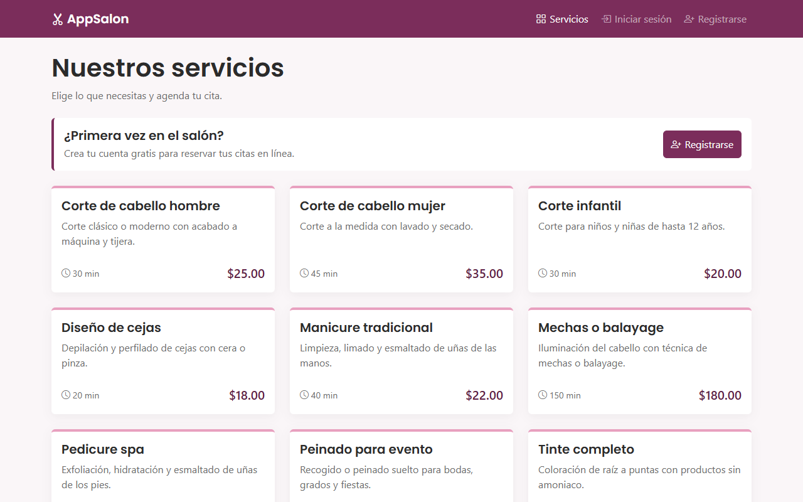
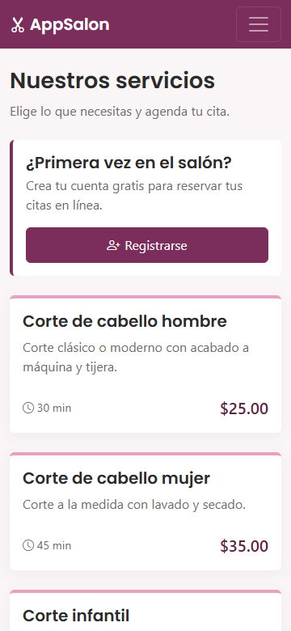
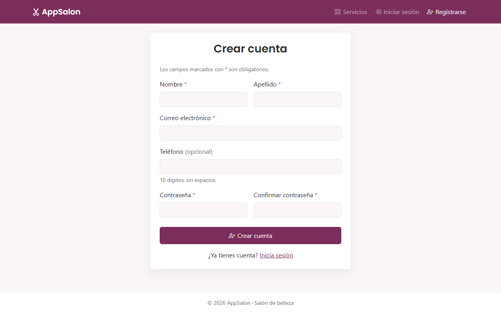
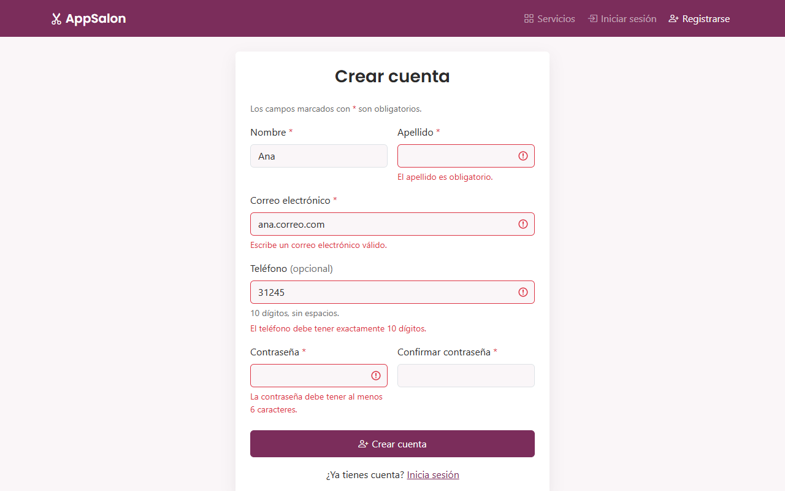
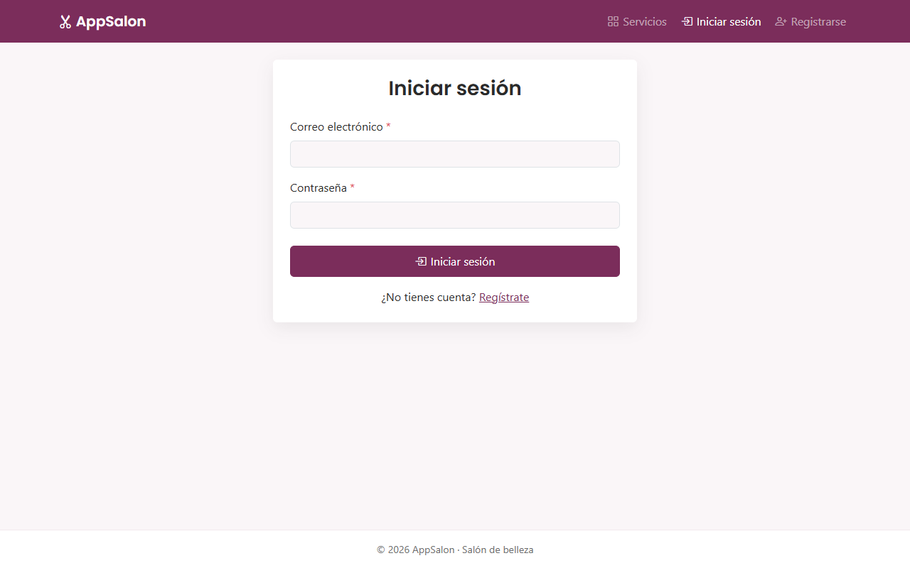
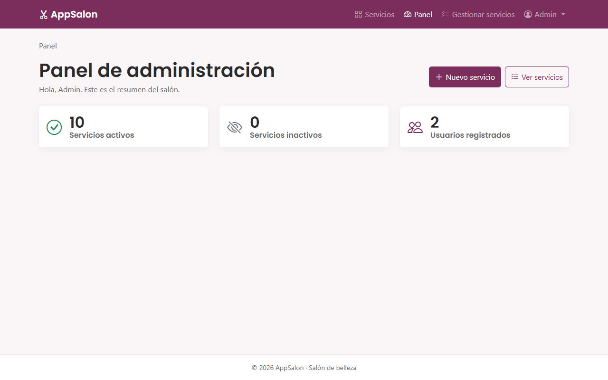
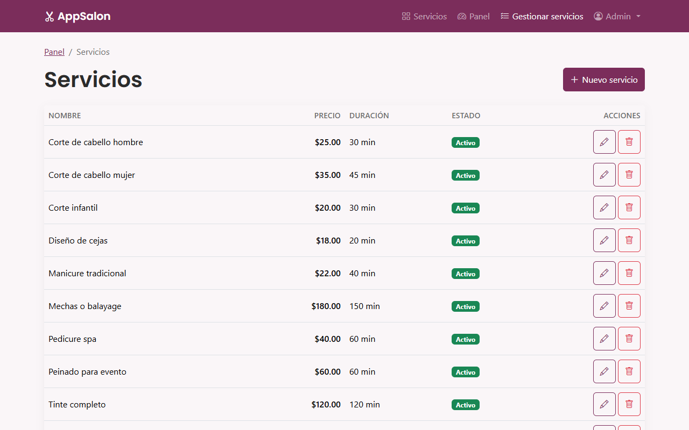
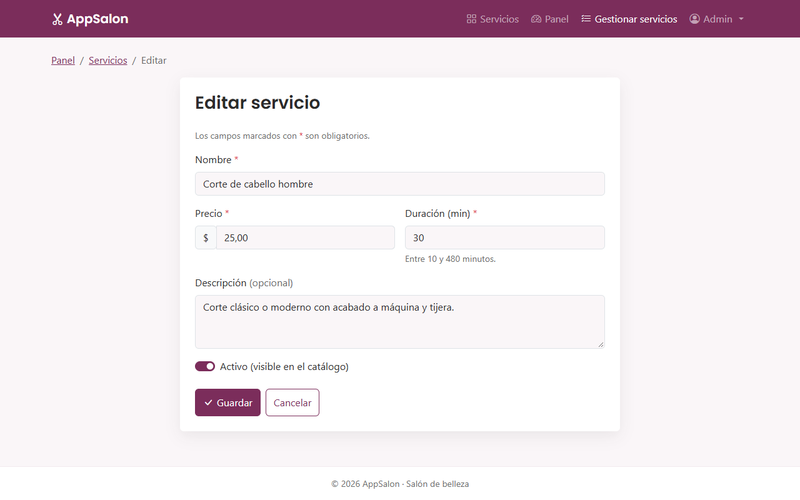
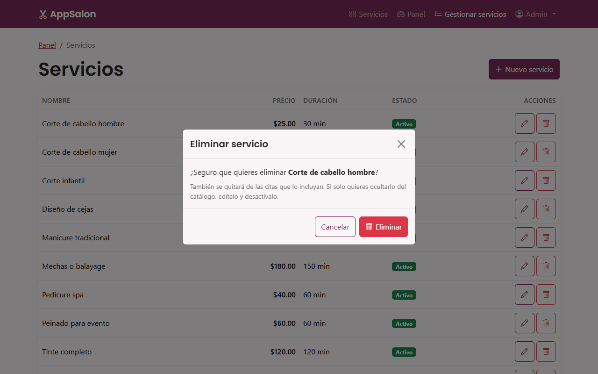
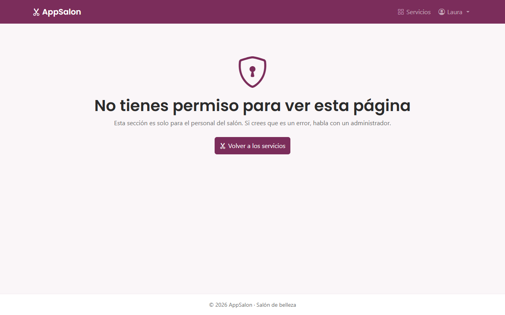

Manual de usuario · Sistema de citas para salón de belleza


AppSalon funciona en el navegador (Chrome, Edge o Firefox), en computador, tableta o celular. No hay que instalar nada.
http://127.0.0.1:8000.| Rol | Qué puede hacer | Cuenta de prueba |
|---|---|---|
| Visitante | Ver el catálogo y crear una cuenta. | No necesita |
| Cliente | Iniciar sesión y ver el catálogo. La reserva de citas llega en la siguiente versión. | cliente@appsalon.com / Cliente123 |
| Administrador | Todo lo anterior, el panel y la gestión de servicios. | admin@appsalon.com / Admin123 |
AppSalon · Entrega intermedia (semana 11) · Laravel 12, MySQL y Bootstrap 5.


Al terminar el registro verás el mensaje verde «Cuenta creada, ya puedes iniciar sesión» y quedarás en la pantalla de inicio de sesión. En esta versión no hace falta confirmar por correo: la cuenta se puede usar de inmediato. La confirmación por un enlace enviado al correo está prevista para la entrega final.
Cada tarjeta muestra el servicio, una descripción, la duración en minutos (⏱) y el precio. Solo aparecen los servicios activos. En el celular las tarjetas se ven una debajo de otra.

Al iniciar sesión con una cuenta de administrador llegas al Panel. En el menú aparecen además Panel y Gestionar servicios. La ruta de navegación (Panel / Servicios / …) te dice dónde estás.




Los avisos aparecen arriba de la página y se cierran solos a los 5 segundos (o con la ×): verde cuando algo salió bien, rojo cuando falló y azul para información.
| Mensaje | Qué significa y qué hacer |
|---|---|
| Campo en rojo con un texto debajo | Ese dato no es válido. Corrígelo según el texto y vuelve a enviar. |
| «Credenciales incorrectas» | El correo o la contraseña no coinciden. Revisa mayúsculas y que el correo sea el del registro. |
| «Ya existe una cuenta con ese correo electrónico.» | Ese correo ya está registrado: inicia sesión en lugar de registrarte. |
| «Demasiados intentos» | Hubo más de 5 intentos de inicio de sesión o registro en un minuto. Espera un minuto. |
| «No tienes permiso para ver esta página» (403) | Entraste a una sección solo para administradores con una cuenta de cliente. |
| «No encontramos esta página» (404) | La dirección está mal escrita o el servicio ya fue eliminado. |
| «La página expiró» (419) | El formulario estuvo abierto mucho tiempo. Recarga la página y envíalo otra vez. |
| «No pudimos completar la solicitud» | Abriste una dirección que no se usa así (por ejemplo, escribir /logout en el navegador). Usa los botones del sitio. |
| «Algo salió mal de nuestro lado» (500) | Falla del servidor. Intenta de nuevo en unos minutos; si sigue, avisa al administrador. |
| «No pudimos guardar/actualizar/eliminar el servicio» | La base de datos no respondió. Tus datos quedan en el formulario: inténtalo de nuevo. |

3001234567). También puedes dejarlo vacío.admin de la tabla usuarios).¿Algo no funciona como dice este manual? Escribe al equipo de desarrollo con la dirección de la página, lo que hiciste y el mensaje que viste.